소방설비기사(기계분야) (2021-09-12 기출문제)
1과목: 소방원론
1. 소화기구 및 자동소화장치의 화재안전기준에 따르면 소화기구(자동확산소화기는 제외)는 거주자 등이 손쉽게 사용할 수 있는 장소에 바닥으로부터 높이 몇 m 이하의 곳에 비치하여야 하는가?
- 0.5
- 1.0
- 1.5
- 2.0
(정답률: 77%)

2. 화재의 분류방법 중 유류화재를 나타낸 것은?
- A급 화재
- B급 화재
- C급 화재
- D급 화재
(정답률: 89%)
3. 연기감지기가 작동할 정도이고 가시거리가 20~30m 에 해당하는 감광계수는 얼마인가?
- 0.1m-1
- 1.0m-1
- 2.0m-1
- 10m-1
(정답률: 74%)
4. 소화약제로 사용되는 물에 관한 소화성능 및 물성에 대한 설명으로 틀린 것은?
- 비열과 증발잠열이 커서 냉각소화 효과가 우수하다.
- 물(15℃)의 비열은 약 1cal/g·℃ 이다.
- 물(100℃)의 증발잠열은 439.6kcal/g 이다.
- 물의 기화에 의한 팽창된 수증기는 질식소화 작용을 할 수 있다.
(정답률: 78%)
5. 소화에 필요한 CO2의 이론소화농도가 공기 중에서 37Vol% 일 때 한계산소농도는 약 몇 vol% 인가?
- 13.2
- 14.5
- 15.5
- 16.5
(정답률: 56%)
6. 물리적 소화방법이 아닌 것은?
- 연쇄반응의 억제에 의한 방법
- 냉각에 의한 방법
- 공기와의 접촉 차단에 의한 방법
- 가연물 제거에 의한 방법
(정답률: 81%)
7. Halon 1211의 화학식에 해당하는 것은?
- CH2BrCl
- CF2ClBr
- CH2BrF
- CF2HBr
(정답률: 81%)
8. 마그네슘의 화재에 주수하였을 때 물과 마그네슘의 반응으로 인하여 생성되는 가스는?
- 산소
- 수소
- 일산화탄소
- 이산화탄소
(정답률: 84%)
9. 제2종 분말소화약제의 주성분으로 옳은 것은?
- NaH2PO4
- KH2PO4
- NaHCO3
- KHCO3
(정답률: 67%)
10. 조연성가스로만 나열되어 있는 것은?
- 질소, 불소, 수증기
- 산소, 불소, 염소
- 산소, 이산화탄소, 오존
- 질소, 이산화탄소, 염소
(정답률: 80%)
11. 위험물안전관리법령상 자기반응성물질의 품명에 해당하지 않는 것은?
- 니트로화합물
- 할로겐간화합물
- 질산에스테르류
- 히드록실아민염류
(정답률: 66%)
12. 건축물 화재에서 플래시 오버(Flash over) 현상이 일어나는 시기는?
- 초기에서 성장기로 넘어가는 시기
- 성장기에서 최성기로 넘어가는 시기
- 최성기에서 감쇠기로 넘어가는 시기
- 감쇠기에서 종기로 넘어가는 시기
(정답률: 84%)
13. 물과 반응하였을 때 가연성 가스를 발생하여 화재의 위험성이 증가하는 것은?
- 과산화칼슘
- 메탄올
- 칼륨
- 과산화수소
(정답률: 68%)
14. 인화칼슘과 물이 반응할 때 생성되는 가스는?
- 아세틸렌
- 황화수소
- 황산
- 포스핀
(정답률: 67%)
15. 다음 중 공기에서의 연소범위를 기준으로 했을 때 위험도(H) 값이 가장 큰 것은?
- 디에틸에테르
- 수소
- 에틸렌
- 부탄
(정답률: 54%)
16. 소화약제로 사용되는 이산화탄소에 대한 설명으로 옳은 것은?
- 산소와 반응 시 흡열반응을 일으킨다.
- 산소와 반응하여 불연성 물질을 발생시킨다.
- 산화하지 않으나 산소와는 반응한다.
- 산소와 반응하지 않는다.
(정답률: 71%)
17. 다음 중 피난자의 집중으로 패닉현상이 일어날 우려가 가장 큰 형태는?
- T형
- X형
- Z형
- H형
(정답률: 76%)
18. 물리적 폭발에 해당하는 것은?
- 분해 폭발
- 분진 폭발
- 중합 폭발
- 수증기 폭발
(정답률: 70%)
19. 다음 중 착화온도가 가장 낮은 것은?
- 아세톤
- 휘발유
- 이황화탄소
- 벤젠
(정답률: 64%)
20. 건물화재 시 패닉(panic)의 발생원인과 직접적인 관계가 없는 것은?
- 연기에 의한 시계 제한
- 유독가스에 의한 호흡 장애
- 외부와 단절되어 고립
- 불연내장재의 사용
(정답률: 85%)
2과목: 소방유체역학
21. 지름이 5cm인 원형 관내에 이상기체가 층류로 흐른다. 다음 중 이 기체의 속도가 될 수 있는 것을 모두 고르면? (단, 이 기체의 절대압력은 200kPa, 온도는 27℃, 기체상수는 2080 J/kg·K, 점성계수는 2×10-5 N·s/m2, 하임계 레이놀즈수는 2200으로 한다.)
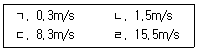
- ㄱ
- ㄱ, ㄴ
- ㄱ, ㄴ ,ㄷ
- ㄱ, ㄴ, ㄷ, ㄹ
(정답률: 47%)
22. 표면장력에 관련된 설명 중 옳은 것은?
- 표면장력의 차원은 힘/면적이다.
- 액체와 공기의 경계면에서 액체분자의 응집력보다 공기분자와 액체분자 사이의 부착력이 클 때 발생된다.
- 대기 중의 물방울은 크기가 작을수록 내부압력이 크다.
- 모세관현상에 의한 수면 상승 높이는 모세관의 직경에 비례한다.
(정답률: 44%)
23. 유체의 점성에 대한 설명으로 틀린 것은?
- 질소 기체의 동점성계수는 온도 증가에 따라 감소한다.
- 물(액체)의 점성계수는 온도 증가에 따라 감소한다.
- 점성은 유동에 대한 유체의 저항을 나타낸다.
- 뉴턴유체에 작용하는 전단응력은 속도기울기에 비례한다.
(정답률: 44%)
24. 회전속도 1000rpm 일 때 송출량 Q m3/min, 전양정 H m인 원심펌프가 상사한 조건에서 송출량이 1.1Q m3/min가 되도록 회전속도를 증가시킬 때, 전양정은 어떻게 되는가?
- 0.91 H
- H
- 1.1 H
- 1.21 H
(정답률: 50%)
25. 그림과 같이 노즐이 달린 수평관에서 계기압력이 0.49MPa 이었다. 이 관의 안지름이 6cm이고 관의 끝에 달린 노즐의 지름이 2cm 이라면 노즐의 분출속도는 몇 m/s인가? (단, 노즐에서의 손실은 무시하고, 관마찰계수는 0.025 이다.)
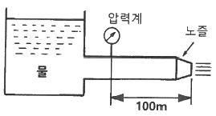
- 16.8
- 20.4
- 25.5
- 28.4
(정답률: 25%)
26. 원심펌프가 전양정 120m에 대해 6m3/s의 물을 공급할 때 필요한 축동력이 9530kW 이었다. 이때 펌프의 체적효율과 기계효율이 각각 88%, 89% 라고 하면, 이 펌프의 수력효율은 약 몇 % 인가?
- 74.1
- 84.2
- 88.5
- 94.5
(정답률: 33%)
27. 안지름 4cm, 바깥지름 6cm인 동심 이중관의 수력직경(hydraulic diameter)은 몇 cm 인가?
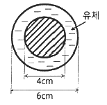
- 2
- 3
- 4
- 5
(정답률: 47%)
28. 열역학 관련 설명 중 틀린 것은?
- 삼중점에서는 물체의 고상, 액상, 기상이 공존한다.
- 압력이 증가하면 물의 끓는점도 높아진다.
- 열을 완전히 일로 변환할 수 있는 효율이 100%인 열기관은 만들 수 없다.
- 기체의 정적비열은 정압비열보다 크다.
(정답률: 49%)
29. 다음 중 차원이 서로 같은 것을 모두 고르면? (단, P : 압력, ρ : 밀도, V : 속도, h : 높이, F : 힘, m : 질량, g : 중력가속도)
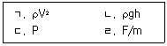
- ㄱ, ㄴ
- ㄱ, ㄷ
- ㄱ, ㄴ, ㄷ
- ㄱ, ㄴ, ㄷ, ㄹ
(정답률: 44%)
30. 밀도가 10kg/m3 인 유체가 지름 30cm인 관내를 1m3/s 로 흐른다. 이때의 평균유속은 몇 m/s 인가?
- 4.25
- 14.1
- 15.7
- 84.9
(정답률: 49%)
31. 초기 상태에서 압력 100kPa, 온도 15℃인 공기가 있다. 공기의 부피가 초기 부피의 1/20이 될 때까지 가역단열 압축할 때 압축 후의 온도는 약 몇 ℃인가? (단, 공기의 비열비는 1.4 이다.)
- 54
- 348
- 682
- 912
(정답률: 37%)
32. 부피가 240m3인 방 안에 들어 있는 공기의 질량은 약 몇 kg 인가? (단, 압력은 100kPa, 온도는 300K 이며, 공기의 기체상수는 0.287 kJ/kg·K 이다.)
- 0.279
- 2.79
- 27.9
- 279
(정답률: 40%)
33. 그림의 액주계에서 밀도 ρ1 = 1000 kg/m3, ρ2 = 13600 kg/m3, 높이 h1 = 500mm, h2 = 800mm 일 때 중심 A의 계기압력은 몇 kPa 인가?
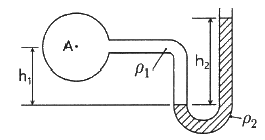
- 101.7
- 109.6
- 126.4
- 131.7
(정답률: 44%)
34. 그림과 같이 수조의 두 노즐에서 물이 분출하여 한 점(A)에서 만나려고 하면 어떤 관계가 성립되어야 하는가? (단, 공기저항과 노즐의 손실은 무시한다.)
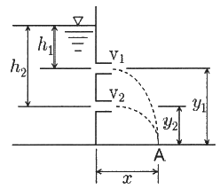
- h1y1 = h2y2
- h1y2 = h2y1
- h1h2 = y1y2
- h1y1 = 2h2y2
(정답률: 46%)
35. 길이 100m, 직경 50mm, 상대조도 0.01인 원형 수도관 내에 물이 흐르고 있다. 관내 평균유속이 3m/s에서 6m/s로 증가하면 압력손실은 몇 배로 되겠는가? (단, 유동은 마찰계수가 일정한 완전난류로 가정한다.)
- 1.41배
- 2배
- 4배
- 8배
(정답률: 43%)
36. 한 변이 8cm인 정육면체를 비중이 1.26인 글리세린에 담그니 절반의 부피가 잠겼다. 이때 정육면체를 수직방향으로 눌러 완전히 잠기게 하는데 필요한 힘은 약 몇 N 인가?
- 2.56
- 3.16
- 6.53
- 12.5
(정답률: 39%)
37. 그림과 같이 반지름 0.8m이고 폭이 2m인 곡면 AB가 수문으로 이용된다. 물에 의한 힘의 수평성분의 크기는 약 몇 kN 인가? (단, 수문의 폭은 2m 이다.)
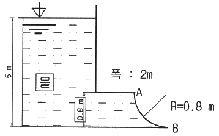
- 72.1
- 84.7
- 90.2
- 95.4
(정답률: 33%)
38. 펌프 운전 시 발생하는 캐비테이션의 발생을 예방하는 방법이 아닌 것은?
- 펌프의 회전수를 높여 흡입 비속도를 높게 한다.
- 펌프의 설치높이를 될 수 있는 대로 낮춘다.
- 입형펌프를 사용하고, 회전차를 수중에 완전히 잠기게 한다.
- 양흡입 펌프를 사용한다.
(정답률: 54%)
39. 실내의 난방용 방열기(물-공기 열교환기)에는 대부분 방열 핀(fin)이 달려 있다. 그 주된 이유는?
- 열전달 면적 증가
- 열전달계수 증가
- 방사율 증가
- 열저항 증가
(정답률: 48%)
40. 그림에서 물 탱크차가 받는 추력은 약 몇 N 인가? (단, 노즐의 단면적은 0.03m2 이며, 탱크 내의 계기압력은 40kPa 이다. 또한 노즐에서 마찰 손실은 무시한다.)
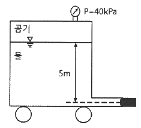
- 812
- 1490
- 2710
- 5340
(정답률: 34%)
3과목: 소방관계법규
41. 소방기본법 제1장 총칙에서 정하는 목적의 내용으로 거리가 먼 것은?
- 구조, 구급 활동 등을 통하여 공공의 안녕 및 질서 유지
- 풍수해의 예방, 경계, 진압에 관한 계획, 예산 지원 활동
- 구조, 구급 활동 등을 통하여 국민의 생명, 신체, 재산 보호
- 화재, 재난, 재해 그 밖의 위급한 상황에서의 구조, 구급 활동
(정답률: 68%)
42. 소방기본법령상 위험물 또는 물건의 보관기간은 소방본부 또는 소방서의 게시판에 공고하는 기간의 종료일 다음 날부터 며칠로 하는가?
- 3
- 4
- 5
- 7
(정답률: 68%)
43. 화재예방, 소방시설 설치·유지 및 안전관리에 관한 법령상 관리업자가 소방시설등의 점검을 마친 후 점검기록표에 기록하고 이를 해당 특정소방대상물에 부착하여야 하나 이를 위반하고 점검기록표를 거짓으로 작성하거나 해당 특정소방대상물에 부착하지 아니하였을 경우 벌칙 기준은?
- 100만원 이하의 벌금
- 200만원 이하의 벌금
- 300만원 이하의 벌금
- 500만원 이하의 벌금
(정답률: 45%)
44. 위험물안전관리법령상 제4류 위험물 중 경유의 지정수량은 몇 리터인가?
- 500
- 1000
- 1500
- 2000
(정답률: 55%)
45. 화재예방, 소방시설 설치·유지 및 안전관리에 관한 법령상 소방청장, 소방본부장 또는 소방서장이 소방특별조사를 하려면 관계인에게 조사대상, 조사기간 및 조사사유 등을 최대 며칠 전에 서면으로 알려야 하는가? (단, 긴급하게 조사할 필요가 있는 경우와 사전에 통지하면 조사목적을 달성할 수 없다고 인정되는 경우는 제외한다.)
- 7
- 10
- 12
- 14
(정답률: 46%)
46. 소방시설공사업법령상 소방시설공사업자가 소속 소방기술자를 소방시설공사 현장에 배치하지 않았을 경우의 과태료 기준은?
- 100만원 이하
- 200만원 이하
- 300만원 이하
- 400만원 이하
(정답률: 37%)
47. 화재예방, 소방시설 설치·유지 및 안전관리에 관한 법령상 천재지변 및 그 밖에 대통령령으로 정하는 사유로 소방특별조사를 받기 곤란하여 소방특별조사의 연기를 신청하려는 자는 소방특별조사 시작 최대 며칠 전까지 연기신청서 및 증명서류를 제출해야 하는가?
- 3
- 5
- 7
- 10
(정답률: 52%)
48. 화재예방, 소방시설 설치·유지 및 안전관리에 관한 법령상 1급 소방안전관리대상물의 소방안전관리자 선임대상 기준 중 ( ) 안에 알맞은 내용은?
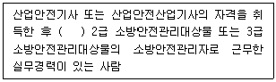
- 1년 이상
- 2년 이상
- 3년 이상
- 5년 이상
(정답률: 48%)
49. 위험물안전관리법령상 제소소등에 설치하여야 할 자동화재탐지설비의 설치기준 중 ( ) 안에 알맞은 내용은? (단, 광선식분리형 감지기 설치는 제외한다.)
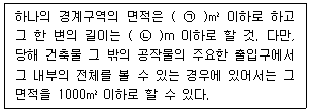
- ㉠ 300, ㉡ 20
- ㉠ 400, ㉡ 30
- ㉠ 500, ㉡ 40
- ㉠ 600, ㉡ 50
(정답률: 56%)
50. 화재예방, 소방시설 설치·유지 및 안전관리에 관한 법령상 특정소방대상물의 관계인은 소방안전관리자를 기준일로부터 30일 이내에 선임하여야 한다. 다음 중 기준일로 틀린 것은?
- 소방안전관리자를 해임한 경우 : 소방안전관리자를 해임한 날
- 특정소방대상물을 양수하여 관계인의 권리를 취득한 경우 : 해당 권리를 취득한 날
- 신축으로 해당 특정소방대상물의 소방안전관리자를 신규로 선임하여야 하는 경우 : 해당 특정소방대상물의 완공일
- 증축으로 인하여 특정소방대상물이 소방안전관리대상물로 된 경우 : 증축공사의 개시일
(정답률: 55%)
51. 위험물안전관리법령상 정기점검의 대상인 제조소등의 기준으로 틀린 것은?
- 지하탱크저장소
- 이동탱크저장소
- 지정수량의 10배 이상의 위험물을 취급하는 제조소
- 지정수량의 20배 이상의 위험물을 저장하는 옥외탱크저장소
(정답률: 58%)
52. 화재예방, 소방시설 설치·유지 및 안전관리에 관한 법령상 특정소방대상물의 관계인이 특정소방대상물의 규모·용도 및 수용인원 등을 고려하여 갖추어야 하는 소방시설의 종류에 대한 기준 중 다음 ( ) 안에 알맞은 것은?
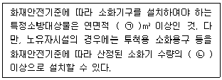
- ㉠ 33, ㉡ 1/2
- ㉠ 33, ㉡ 1/5
- ㉠ 50, ㉡ 1/2
- ㉠ 50, ㉡ 1/5
(정답률: 52%)
53. 화재예방, 소방시설 설치·유지 및 안전관리에 관한 법령상 용어의 정의 중 ( ) 안에 알맞은 것은?
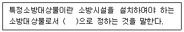
- 대통령령
- 국토교통부령
- 행정안전부령
- 고용노동부령
(정답률: 70%)
54. 화재예방, 소방시설 설치·유지 및 안전관리에 관한 법령상 분말형태의 소화약제를 사용하는 소화기의 내용연수로 옳은 것은? (단, 소방용품의 성능을 확인받아 그 사용기한을 연장하는 경우는 제외한다.)
- 3년
- 5년
- 7년
- 10년
(정답률: 60%)
55. 소방시설공사업법령상 전문 소방시설공사업의 등록기준 및 영업범위의 기준에 대한 설명으로 틀린 것은?
- 법인인 경우 자본금은 최소 1억원 이상이다.
- 개인인 경우 자산평가액은 최소 1억원 이상이다.
- 주된 기술인력 최소 1명 이상, 보조기술인력 최소 3명 이상을 둔다.
- 영업범위는 특정소방대상물에 설치되는 기계분야 및 전기분야 소방시설의 공사·개설·이전 및 정비이다.
(정답률: 58%)
56. 다음 위험물안전관리법령의 자체소방대 기준에 대한 설명으로 틀린 것은?
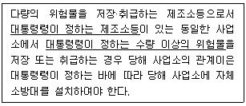
- “대통령령이 정하는 제조소등”은 제4류 위험물을 취급하는 제조소를 포함한다.
- “대통령령이 정하는 제조소등”은 제4류 위험물을 취급하는 일반취급소를 포함한다.
- “대통령령이 정하는 수량 이상의 위험물”은 제4류 위험물의 최대수량의 합이 지정수량의 3천배 이상인 것을 포함한다.
- “대통령령이 정하는 제조소등”은 보일러로 위험물을 소비하는 일반취급소를 포함한다.
(정답률: 55%)
57. 소방기본법령상 소방본부 종합상황실의 실장이 서면·팩스 또는 컴퓨터통신 등으로 소방청 종합상황실에 보고하여야 하는 화재의 기준이 아닌 것은?
- 이재민이 100인 이상 발생한 화재
- 재산피해액이 50억원 이상 발생한 화재
- 사망자가 3인 이상 발생하거나 사상자가 5인 이상 발생한 화재
- 층수가 5층 이상이거나 병상이 30개 이상인 종합병원에서 발생한 화재
(정답률: 57%)
58. 소방기본법령상 특수가연물의 수량 기준으로 옳은 것은?
- 면화류 : 200kg 이상
- 가연성고체류 : 500kg 이상
- 나무껍질 및 대팻밥 : 300kg 이상
- 넝마 및 종이부스러기 : 400kg 이상
(정답률: 50%)
59. 위험물안전관리법령상 위험물을 취급함에 있어서 정전기가 발생할 우려가 있는 설비에 설치할 수 있는 정전기 제거설비 방법이 아닌 것은?
- 접지에 의한 방법
- 공기를 이온화하는 방법
- 자동적으로 압력의 상승을 정지시키는 방법
- 공기 중의 상대습도를 70% 이상으로 하는 방법
(정답률: 55%)
60. 소방기본법령상 소방활동장비와 설비의 구입 및 설치 시 국조보조의 대상이 아닌 것은?
- 소방자동차
- 사무용 집기
- 소방헬리콥터 및 소방정
- 소방전용통신설비 및 전산설비
(정답률: 67%)
4과목: 소방기계시설의 구조 및 원리
61. 특별피난계단의 계단실 및 부속실 제연설비의 화재안전기준상 수직풍도에 따른 배출기준 중 각층의 옥내와 면하는 수직풍도의 관통부에 설치하여야 하는 배출댐퍼 설치기준으로 틀린 것은?
- 화재층의 옥내에 설치된 화재감지기의 동작에 따라 당해층의 댐퍼가 개방될 것
- 풍도의 배출댐퍼는 이·탈착구조가 되지 않도록 설치할 것
- 개폐여부를 당해 장치 및 제어반에서 확인할 수 있는 감지기능을 내장하고 있을 것
- 배출댐퍼는 두께 1.5mm 이상의 강판 또는 이와 동등 이상의 성능이 있는 것으로 설치하여야 하며 비 내식성 재료의 경우에는 부식방지 조치를 할 것
(정답률: 59%)
62. 포소화설비의 화재안전기준에 따라 포소화설비 송수구의 설치 기준에 대한 설명으로 옳은 것은?
- 구경 65mm의 쌍구형으로 할 것
- 지면으로부터 높이가 0.5m 이상 1.5m 이하의 위치에 설치할 것
- 하나의 층 바닥면적이 2000m2를 넘을 때마다 1개 이상을 설치할 것
- 송수구의 가까운 부분에 자동배수밸브(또는 직경 3mm의 배수공) 및 안전밸브를 설치할 것
(정답률: 41%)
63. 스프링클러설비 본체내의 유수현상을 자동적으로 검지하여 신호 또는 경보를 발하는 장치는?
- 수압계폐장치
- 물올림장치
- 일제개방밸브장치
- 유수검지장치
(정답률: 67%)
64. 옥내소화전설비 화재안전기준에 따라 옥내소화전설비의 표시등 설치기준으로 옳은 것은?
- 가압송수장치의 기동을 표시하는 표시등은 옥내소화전함의 상부 또는 그 직근에 설치한다.
- 가압송수장치의 기동을 표시하는 표시등은 녹색등으로 한다.
- 자체소방대를 구성하여 운영하는 경우 가압송수장치의 기동표시등을 반드시 설치해야 한다.
- 옥내소화전설비의 위치를 표시하는 표시등은 함의 하부에 설치하되, 「표시등의 성능인증 및 제품검사의 기술기준」에 적합한 것으로 한다.
(정답률: 49%)
65. 소화기구 및 자동소화장치의 화재안전기준상 건축물의 주유구조부가 내화구조이고, 벽 및 반자의 실내에 면하는 부분이 불연재료로 된 바닥 면적이 600m2인 노유자시설에 필요한 소화기구의 능력단위는 최소 얼마 이상으로 하여야 하는가?
- 2단위
- 3단위
- 4단위
- 6단위
(정답률: 46%)
66. 분말소화설비의 화재안전기준에 따라 분말소화설비의 자동식 기동장치의 설치기준으로 틀린 것은? (단, 자동식 기동장치는 자동화재탐지설비의 감지기의 작동과 연동하는 것이다.)
- 기동용 가스용기의 충전비는 1.5 이상으로 할 것
- 자동식 기동장치에는 수동으로도 기동할 수 있는 구조로 할 것
- 전기식 기동장치로서 3병 이상의 저장용기를 동시에 개방하는 설비는 2병 이상의 저장용기에 전자개방밸브를 부착할 것
- 기동용 가스용기에는 내압시험압력의 0.8배 내지 내압시험압력 이하에서 작동하는 안전장치를 설치할 것
(정답률: 47%)
67. 상수도소화용수설비의 화재안전기준에 따른 설치기준 중 다음 ( ) 안에 알맞은 것은?
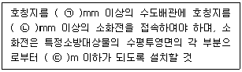
- ㉠ 65, ㉡ 80, ㉢ 120
- ㉠ 65, ㉡ 100, ㉢ 140
- ㉠ 75, ㉡ 80, ㉢ 120
- ㉠ 75, ㉡ 100, ㉢ 140
(정답률: 52%)
68. 스프링클러설비의 화재안전기준에 따라 스프링클러헤드를 설치하지 않을 수 있는 장소로만 나열된 것은?
- 계단실, 병실, 목욕실, 냉동창고의 냉동실, 아파트(대피공간 제외)
- 발전실, 병원의 수술실·응급처치실, 통신기기실, 관람석이 없는 실내 테니스장(실내 바닥·벽 등이 불연재료)
- 냉동창고의 냉동실, 변전실, 병실, 목욕실, 수영장 관람석
- 병원의 수술실, 관람석이 없는 실내 테니스장(실내 바닥·벽 등이 불연재료), 변전실, 발전실, 아파트(대피공간 제외)
(정답률: 58%)
69. 포소화설비의 화재안전기준에 따라 포소화설비에 소방용 합성수지배관을 설치할 수 있는 경우로 틀린 것은?
- 배관을 지하에 매설하는 경우
- 다른 부분과 내화구조로 구획된 덕트 또는 피트의 내부에 설치하는 경우
- 동결방지조치로 하거나 동결의 우려가 없는 경우
- 천장과 반자를 불연재료 또는 준불연재료로 설치하고 그 내부에 습식으로 배관을 설치하는 경우
(정답률: 41%)
70. 다음 중 피난기구의 화재안전기준에 따라 피난기구를 설치하지 아니하여도 되는 소방대상물로 틀린 것은?
- 발코니 등을 토하여 인접세대로 피난할 수 있는 구조로 되어 있는 계단실형 아파트
- 주요구조부가 내화구조로서 거실의 각 부분으로 직접 복도로 피난할 수 있는 학교(강의실 용도로 사용되는 층에 한함)
- 무인공장 또는 자동창고로서 사람의 출입이 금지된 장소
- 문화집회 및 운동시설·판매시설 및 영업시설 또는 노유자시설의 용도로 사용되는 층으로서 그 층의 바닥면적이 1000m2 이상인 것
(정답률: 57%)
71. 지하구의 화재안전기준에 따라 연소방지설비헤드의 설치기준으로 옳은 것은?
- 헤드간의 수평거리는 연소방지설비 전용헤드의 경우에는 1.5m 이하로 할 것
- 헤드간의 수평거리는 스프링클러헤드의 경우에는 2m 이하로 할 것
- 천장 또는 벽면에 설치할 것
- 한쪽 방향의 살수구역의 길이는 2m 이상으로 할 것
(정답률: 45%)
72. 소화기구 및 자동소화장치의 화재안전기준상 소화기구의 소화약제별 적응성 중 C급 화재에 적응성이 없는 소화약제는?
- 마른 모래
- 할로겐화합물 및 불활성기체 소화약제
- 이산화탄소 소화약제
- 중탄산염류 소화약제
(정답률: 55%)
73. 이산화탄소소화설비 및 할론소화설비의 국소방출방식에 대한 설명으로 옳은 것은?
- 고정식 소화약제 공급장치에 배관 및 분사헤드를 설치하여 직접 화점에 소화약제를 방출하는 방식이다.
- 고정된 분사헤드에서 밀폐 방호구역 공간 전체로 소화약제를 방출하는 방식이다.
- 호스 선단에 부착된 노즐을 이동하여 방호대상물에 직접 소화약제를 방출하는 방식이다.
- 소화약제 용기 노즐 등을 운반기구에 적재하고 방호대상물에 직접 소화약제를 방출하는 방식이다.
(정답률: 41%)
74. 특고압의 전기시설을 보호하기 위한 소화설비로 물분무소화설비를 사용한다. 그 주된 이유로 옳은 것은?
- 물분무 설비는 다른 물 소화설비에 비해서 신속한 소화를 보여주기 때문이다.
- 물분무 설비는 다른 물 소화설비에 비해서 물의 소모량이 적기 때문이다.
- 분무상태의 물은 전기적으로 비전도성이기 때문이다.
- 물분무입자 역시 물이므로 전기전도성이 있으나 전기 시설물을 젖게 하지 않기 때문이다.
(정답률: 59%)
75. 물분소화설비의 화재안전기준에 따라 물분무소화설비를 설치하는 차고 또는 주차장이 배수설비 설치기준으로 틀린 것은?
- 차량이 주차하는 바닥은 배수구를 향해 1/100 이상의 기울기를 유지할 것
- 배수구에서 새어나온 기름을 모아 소화할 수 있도록 길이 40m 이하마다 집수관·소화핏트 등 기름분리장치를 설치할 것
- 차량이 주차하는 장소의 적당한 곳에 높이 10cm 이상이 경계턱으로 배수구를 설치할 것
- 배수설비는 가압송수장치의 최대송소능력이 수량을 유효하게 배수할 수 있는 크기 및 기울기로 할 것
(정답률: 59%)
76. 연결송수관설비의 화재안전기준에 따라 송수구가 부설된 옥내소화전을 설치한 특정소방대상물로서 연결송수관설비의 방수구를 설치하지 아니할 수 있는 층의 기준 중 다음 ( ) 안에 알맞은 것은? (단, 집회장·관람장·백화점·도매시장·소매시장·판매시설·공장·창고시설 또는 지하가를 제외한다.)
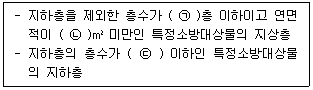
- ㉠ 3, ㉡ 5000, ㉢ 3
- ㉠ 4, ㉡ 6000, ㉢ 2
- ㉠ 5, ㉡ 3000, ㉢ 3
- ㉠ 6, ㉡ 4000, ㉢ 2
(정답률: 40%)
77. 스프링클러설비의 화재안전기준에 따라 폐쇄형스프링클러헤드를 최고 주위온도 40℃인 장소(공장 및 창고 제외)에 설치할 경우 표시온도는 몇 ℃의 것을 설치하여야 하는가?
- 79℃ 미만
- 79℃ 이상 121℃ 미만
- 121℃ 이상 162℃ 미만
- 162℃ 이상
(정답률: 59%)
78. 할론소화설비의 화재안전기준상 할론 1211을 국소방출방식으로 방사할 때 분사헤드의 방사압력 기준은 몇 MPa 이상인가?
- 0.1
- 0.2
- 0.9
- 1.⑤
(정답률: 39%)
79. 물분무소화설비의 화재안전기준상 물분무헤드를 설치하지 아니할 수 있는 장소의 기준 중 다음 ( ) 안에 알맞은 것은?
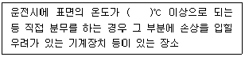
- 160
- 200
- 260
- 300
(정답률: 57%)
80. 인명구조기구의 화재안전기준에 따라 특정소방대상물의 용도 및 장소별로 설치해야 할 인명구조기구의 기준으로 틀린 것은?
- 지하가 중 지하상가는 인공소생기를 층마다 2개 이상 비치할 것
- 판매시설 중 대규모 점포는 공기호흡기를 층마다 2개 이상 비치할 것
- 지하층을 포함하는 층수가 7층 이상인 관광호텔은 방열복(또는 방화복), 공기호흡기, 인공소생기를 각 2개 이상 비치할 것
- 물분무등소화설비 중 이산화탄소 소화설비를 설치해야 하는 특정소방대상물은 공기호흡기를 이산화탄소 소화설비가 설치된 장소의 출입구 외부 인근에 1대 이상 비치할 것
(정답률: 52%)